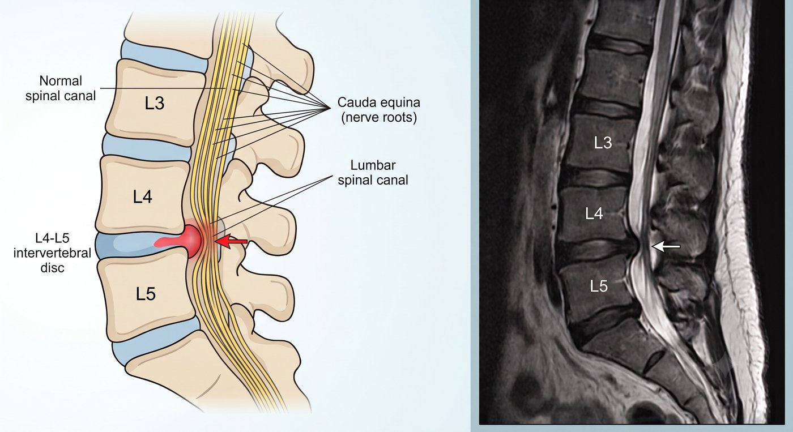
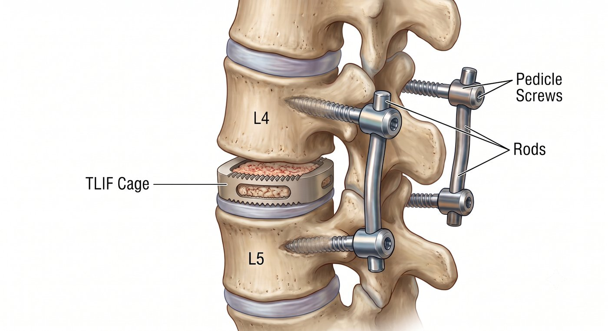

走不到 100 公尺就想坐下休息？這可能不是腳力退化，而是腰椎神經被壓迫。
很多長輩隨著年紀增長，發現自己越來越不敢出門。
原本可以逛市場、散步、出門旅遊，現在走沒幾分鐘，雙腳就開始麻、痠、沉重、無力，必須蹲下來或找椅子坐一下，休息幾分鐘後才能再繼續走。
有些人以為這只是年紀大、體力變差，或是膝蓋不好。
但如果您的症狀是：
站著、走路會加重；坐下、蹲下或彎腰會改善。
那就要小心，可能是腰椎神經正在受到壓迫。
這種情況，常見於腰椎椎管狹窄。

為什麼腰椎狹窄會讓人走不遠？
腰椎裡面有神經通過的空間。
隨著年紀增長，椎間盤退化、骨刺增生、韌帶變厚，這個空間可能越來越窄，神經就會被擠壓。
當您站直或走路時，神經壓迫變明顯，於是出現：
- 腳麻
- 腿痠
- 腿痛
- 腿無力
- 走路越走越短
但當您坐下、蹲下或彎腰時，神經空間會稍微打開，壓迫暫時減輕，所以症狀會比較舒服。
這也是為什麼有些人走路走不遠，卻可以騎腳踏車，或扶著購物車走比較久。
什麼情況需要就醫評估？
如果出現以下情況，建議儘早由醫師評估：
- 走路距離越來越短
- 走一段路就需要坐下或蹲下
- 腳麻、腿痠、腿痛反覆出現
- 站久比坐著更不舒服
- 彎腰或扶推車走路比較輕鬆
- 已經復健、吃藥或打針，但改善有限
- 腿部無力越來越明顯
- 原本願意出門，現在因為腳麻腳痠越來越不想走
一般 X 光可以看脊椎退化、滑脫與骨刺；如果要確認神經壓迫的位置與嚴重程度，通常需要安排核磁共振檢查。
一直拖延會怎麼樣？
腰椎狹窄通常不是突然發生，而是慢慢退化、慢慢變嚴重。
一開始可能只是走遠一點會麻，後來變成走幾分鐘就要坐下；
原本可以逛市場、散步、旅遊，後來變成只敢待在家裡。
當活動量越來越少，肌力、體力和平衡感也會慢慢下降。
對長輩來說，走路能力變差，不只是腳麻腳痛
而已，也會影響生活範圍、獨立性與生活品質。
如果神經受壓時間太久，少數嚴重情況可能造成肌力下降、肌肉萎縮、走路拖腳，甚至大小便控制異常等較難恢復的後果。
疼痛可以忍，但神經症狀不應該一直拖。
所以，走不遠不一定只是老化。
如果症狀已經反覆影響生活，就不應該只是一直忍耐。
腰椎狹窄一定要開刀嗎？
不一定。
不是每一個腰椎狹窄都需要手術。
有些患者可以先透過藥物、復健、姿勢調整或注射治療來改善。
但重點是：
- 您現在的腳麻、腿痠、走不遠，到底是不是腰椎神經壓迫造成的？
- 影像上的狹窄，是否真的和症狀有關？
- 目前是可以先保守治療，還是已經需要進一步處理？
這些都需要在門診透過症狀、身體檢查與影像檢查一起判斷。
什麼是微創腰椎減壓手術？
腰椎狹窄的手術目的，是幫被壓迫的神經「減壓」。
簡單來說，就是把壓迫神經的骨刺、變厚的韌帶或退化組織移除，讓神經重新有空間。
微創腰椎減壓手術會透過較小的傷口，在顯微鏡、內視鏡或影像輔助下，處理真正壓迫神經的位置，盡量減少對肌肉與正常組織的破壞。
對適合的患者來說，手術目標是：
- 減少神經壓迫
- 改善腳麻、腿痠與腿痛
- 增加走路距離
- 幫助恢復日常活動

走不遠，不一定只是老化
如果走不遠、站不久、腳麻腿痠已經影響您的生活，就不要只是一直忍耐。
讓專業醫師協助您評估，找出真正的原因，才能選擇最適合您的治療方式。
手術不是目的，重新走回生活才是目的。
把時間留給生活，不留給疼痛。